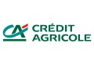

Crédit Agricole - LCL
Description
Le Crédit Agricole est actif dans tous les métiers de la finance. Très présent dans l'activité de banque de détail en France (dont LCL) et en Europe, il est aussi présent à travers le monde, à travers sa Banque de Financement et d'Investissemet (CIB) et Amundi, sa filiale de gestion d'actifs qui gère plus de 850 milliards d'euros d'actifs dans le monde.
Appréciation générale
En plus d'être impliqué dans des scandales financiers comme le Libor, ne pas faire figure de bon élève quant à son attention au respect des Droits de l'Homme par ses clients, le Crédit Agricole a des impacts énormes sur l'environnement, principalement via ses filiales Crédit Agricole CIB et Amundi.
On le retrouve aussi derrière de très nombreux projets ou activités controversés - charbon, pétrole, agrocarburants, etc.
En 2009, le Crédit Agricole a commencé à adopter des politiques sectorielles destinées à encadrer ses activités dans les secteurs à risques, notamment celui de l'énergie.
Mais, malgré quelques améliorations intéressantes - comme par exemple le fait qu'elles couvrent désormais toutes les activités du Crédit Agricole, de la banque de financement et d'investissment à la gestion d'actifs, ces politiques ne suffisent pas à prévenir le financement d'activités aux impacts sociaux et environnementaux très lourds.
Un exemple, en mai et septembre 2015, Crédit Agricole adoptait des mesures de réduction de ses soutiens au charbon. Ces mesures n'ont été qu'en partie transcrites dans les politiques sectorielles de la banque dont on attend donc toujours une complète mise à jour.
Mais surtout, bien que cela marque un pas dans la bonne direction, ces engagements ne couvrent qu'une infime partie des soutiens du Crédit Agricole au secteur du charbon.
Crédit Agricole finance donc toujours cette industrie climaticide et envisage même aujourd'hui de soutenir le projet de centrale à charbon Tanjung Jati B - TBJ2 en Indonésie.
| Niveau | Commentaires | |
|---|---|---|
| Environnement |  |
Le Crédit Agricole ne prend en considération l'environnement qu'à la marge, n'excluant de ses soutiens que les pires pratiques des activités qui violent le droit de tou-te-s à un environnement sain. |
| Climat |  |
Si le Crédit Agricole est fier de ses obligations vertes ou de sa récente accréditation auprès du Fonds Vert pour le Climat, toutes ses mesures ne restent qu'une façade qui ne suffit pas à cacher les milliards affectés à des activités polluantes, à commencer par ses soutiens au charbon. |
| Transparence | |
Le Crédit Agricole rend publiques certaines de ses activités, sélectionnées pour l'image qu'elles renvoient de la banque, mais l'immense majorité reste totalement opaque. |
| Politiques sectorielles |  |
Le Crédit Agricole a adopté des politiques sectorielles de réduction des risques dans le cadre de ses financements et de ses investissements, notamment dans les secteurs de l'énergie - nucléaire, pétrole et gaz, charbon, hydroélectricité, gaz de schiste - des mines et des métaux et du transport - automobile, maritime, aéronautique. Très partielles et insuffisantes, ces politiques n'empêchent pas la banque de continuer à financer des projets et entreprises très controversées dans ces secteurs. |
| Energies renouvelables | |
D'après le Crédit Agricole, les énergies renouvelables ont représenté 75 % de l'activité de financement de projets de centrales électriques en 2013. Derrière ce pourcentage en nombre de dossiers et non en montant se cache un soutien total aux énergies renouvelables de seulement 4 milliards d'euros, soit 7 fois moins que ses soutiens aux énergies fossiles. |
| Paradis fiscaux | |
Le Crédit Agricole possède 159 filiales implantées dans les paradis fiscaux et 37% de ses filiales étrangères y sont implantées |
| Energies fossiles - charbon | |
Le Crédit Agricole a soutenu le secteur des énergies fossiles à hauteur de 32 milliards d'euros entre 2009 et 2014, dont 9 milliards au charbon |
| Emissions financées |  |
Le Crédit Agricole est la seule banque française à publier un montant de ses émissions de CO2 financées. Cependant, leur calcul ne prend pas en compte tout un pan de leur activité, notamment la gestion d'actifs ou encore les émissions d'actions et d'obligations, alors que ces modes de soutien financier représentent plus du tiers de ses soutiens à certains secteurs comme celui du charbon. Et surtout, le Crédit Agricole n'a pas annoncé d'objectifs de réduction de ses financements. |
 Liste noire des projets controversés financés Liste noire des projets controversés financés
|
||
| Nom | Photo | Description |
| Nucléaire |  |
Filière nucléaire. Celle-ci va de l'extraction de l'uranium (par exemple dans les mines du Niger) au retraitement des déchets nucléaires, en passant par l'exploitation de centrales nucléaires et la production d'armes nucléaires. source - |
| Usine de pâte à papier de Botnia (Uruguay) |  |
Implication dans la construction d'une usine de pâte à papier en Uruguay ayant provoqué un conflit diplomatique entre l'Argentine et l'Uruguay et entre les communautés locales. |
| Mines de charbon des Appalaches (Etats-Unis) |  |
Technique d'extraction minière dévastatrice de l’environnement qui fait exploser les sommets des montagnes pour en extraire le charbon. Pratiquée dans les Appalaches (Etats-Unis), c’est une aberration climatique, écologique et sanitaire : multiplication des cancers, pollution de l’eau, espérance de vie de 20 ans inférieure à la moyenne des Etats-Unis. En savoir plus ici et sur le site de Banktrack |
| Sables bitumineux (Canada) |  |
Entreprises comme Suncor Energy ou Total exploitant les sables bitumineux extrêmement polluant. La production d'un baril de pétrole extrait des sables bitumineux génère trois fois plus de gaz à effet de serre que la production d'un barril classique. source |
| Centrales à charbon de Medupi et Kusile (Afrique du Sud) |  |
2 méga-centrales à charbon de 4800 MW chacune, qui nécessiteront l'ouverture de 40 nouvelles mines de charbon. Projets très polluants qui profiteront en premier lieu aux multinationales étrangères tournées vers l’exportation. Augmentation du prix de l'électricité pour la population. |
| Gaz naturel liquéfié (Papouasie Nouvelle Guinée) | -63.jpg) |
Colossal projet industriel (extraction, transformation et gazoduc) qui vise l’exportation sur les marchés asiatiques : déplacements forcés des populations, violation des droits des communautés indigènes, conflits sociaux et délitement du tissu social, ce projet implique la déforestation massive de zones de conservation et est source d’une pollution dangereuse de l’air, de l’eau et de la terre |
| Mines de Vedanta Resources |  |
Vedanta Resources est une entreprise minière (aluminium, cuivre, zinc, plomb), fortement présente en Inde, Zambie, Australie et Tanzanie. Très controversée en raison de son passif en matière violations de droits de l'homme et de dommages environnementaux, elle a été exclue du Fonds de pension norvégien, un des plus gros de la planète. Elle menace de nombreuses tribus, notamment celle des Dongria Kondh en Inde. |
| Producteurs de gaz de schiste | Entreprises productrices de gaz de schiste (Total, PGNiG, PKN Orlen) : usage de très grande quantité d'eau et de produits chimiques, pollution des nappes phréatiques et impacts sanitaires, risques sismiques. |
|
| Projet de centrale de Tanjung Jati B en Indonésie |  |
Plus de 1000 morts prématurées par an, une pollution de l'air et des ressources en eau dont dépendent l'activité de pêches des populations locales, une entreprise climaticide et qui violent ses propres engagements, voilà ce à quoi Crédit Agricole et Société Générale apporteraient leur soutien, après le retrait de BNP Paribas. En savoir plus. |
ATTENTION : Ces projets controversés ne constituent que quelques exemples de tous ceux connus des Amis de la Terre dans lesquels le Crédit Agricole est impliqué. Vous pouvez ainsi en découvrir d'autres sur le site Secrets bancaires et consulter le profil de cette banque sur le site de BankTrack.